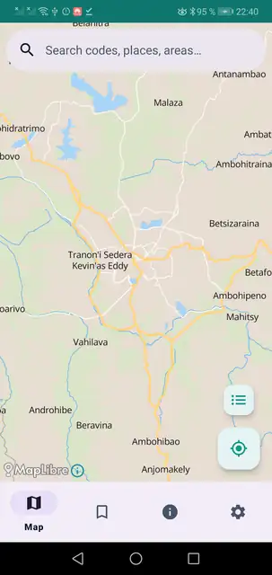
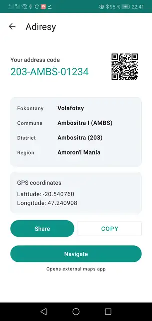

Adiresy
خرائط وسفر
Adiresy is a native Android client for Adiresy, an unofficial addressing service for Madagascar. Madagascar has no formal street-addressing system in most areas. Every building can still get a short, permanent code anchored to GPS coordinates (for example 101-6EAR-50418). This app lets people find,
✓ ترخيص مفتوح (GPL-3.0-only) · آخر تحديث: 2026-11-06
1.1.2الإصدار
21.5 MBالحجم
GPL-3.0-onlyالرخصة
Open in Kanzتحميل APK (21.5 MB)
Download APK
SHA-256: e7d0faac06ba1785d9888dcb89449c249fc503f193289d1c33cfabd0377dd630


تطبيقات تانية لنفس المطوّر (2)
More apps from this developer: org.github
امسح الكود لفتح صفحة التطبيق
Scan to open this app page
لو كنز مش متثبت عندك: نزّل متجر كنز.
Not installed? Get the Kanz store.